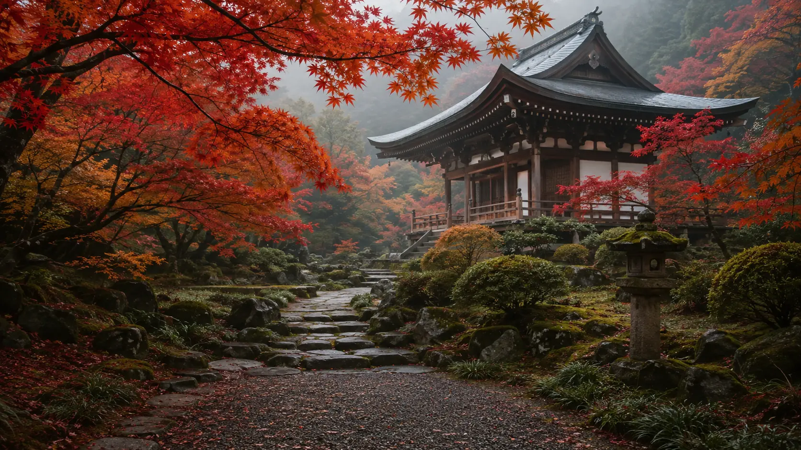

View Kyoto hotels & rooms
Select area, dates and guests on the hotel map. Check breakfast, taxes and cancellation.
View Kyoto hotels & rooms
AUTUMN KYOTO · BOOKING GUIDE
From a day trip to four days.
Compare only the stays, transport and experiences your plan needs.
01 / CHOOSE YOUR PLAN
Prices and availability update on the seller's site. For peak dates, consider reserving flexible or free-cancellation options first.
Hotel for overnight stays · train search for arriving from Osaka · activities for a timed experience. Each item opens the existing Trip.com search or activity list.
Click count only; booking completion is confirmed by the seller.
Compare hotels near Umeda or Shin-Osaka for easier Kyoto access.
Some buttons are affiliate links. AUTUMN KYOTO may earn a commission from a completed booking at no extra cost to you. Learn more →
02 / KYOTO LOCAL EDIT
Ideas drawn from Kyoto-based writers, local drivers and Kyoto City's official travel guidance. Open a card for the best time, route and a practical local note.
03 / READY TO COMPARE
Select area, dates and guests on the hotel map. Check breakfast, taxes and cancellation.
View Kyoto hotels & roomsChoose train dates and seats; check the return trip separately. Local buses and passes are separate.
View Osaka → Kyoto trainsChoose the activity from the Kyoto list. Check meeting point, inclusions, time and cancellation.
Find Kyoto activities & toursTrip.com affiliate links · opens a new tab. Prices, availability and final booking confirmation are provided by the seller.
Review my selected trip plan